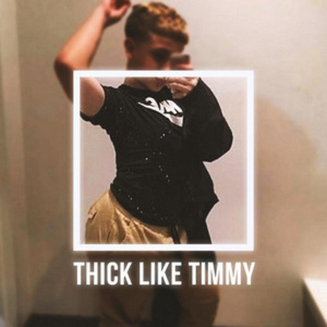

The Eclectic Polymath Podcast · Archive
#052 Beautiful Aliens: Icons of Genre and Gender Fluidity
About this episode
Some artists do not just make music. They arrive like transmissions from somewhere else, bending genre, gender, race, style, sexuality, and performance until the mainstream has to expand around them.
This episode explores the “beautiful alien” archetype in music: the outsider figure who turns difference into power, image into language, and the body into a creative weapon.
We trace a lineage from Freddie Mercury, David Bowie, and Prince to Frank Ocean and Steve Lacy, looking at how these artists used theatricality, ambiguity, fashion, voice, and radical self-invention to escape the limits placed on them.
Key points
- They arrive like transmissions from somewhere else, bending genre, gender, race, style, sexuality, and performance until the mainstream has to expand around them.
- We trace a lineage from Freddie Mercury, David Bowie, and Prince to Frank Ocean and Steve Lacy, looking at how these artists used theatricality, ambiguity, fashion, voice, and radical self-invention to escape the limits placed on them.
- From glam rock and funk to R&B, pop, and alternative music, this is a story about artists who refused to fit cleanly inside inherited categories
More like this
 #217 A Different World: The Sitcom That Refused to EndOctober 16, 202651:08
#217 A Different World: The Sitcom That Refused to EndOctober 16, 202651:08 #094 Fiji: How Paradise Became a Reality TV FactoryJuly 14, 202659:42
#094 Fiji: How Paradise Became a Reality TV FactoryJuly 14, 202659:42
#081 Timmy Thick: Hoaxes, Attention, and the Social Experiment MachineJuly 3, 202647:38 #082 Reality TV: How Unscripted Television Rewired CultureJuly 3, 202652:30
#082 Reality TV: How Unscripted Television Rewired CultureJuly 3, 202652:30